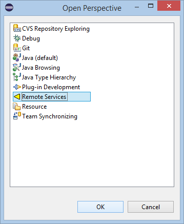
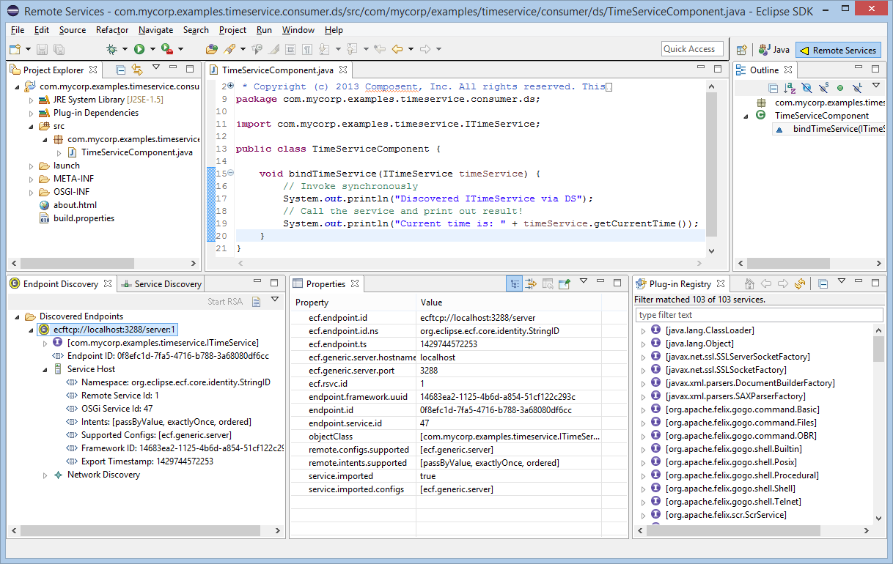
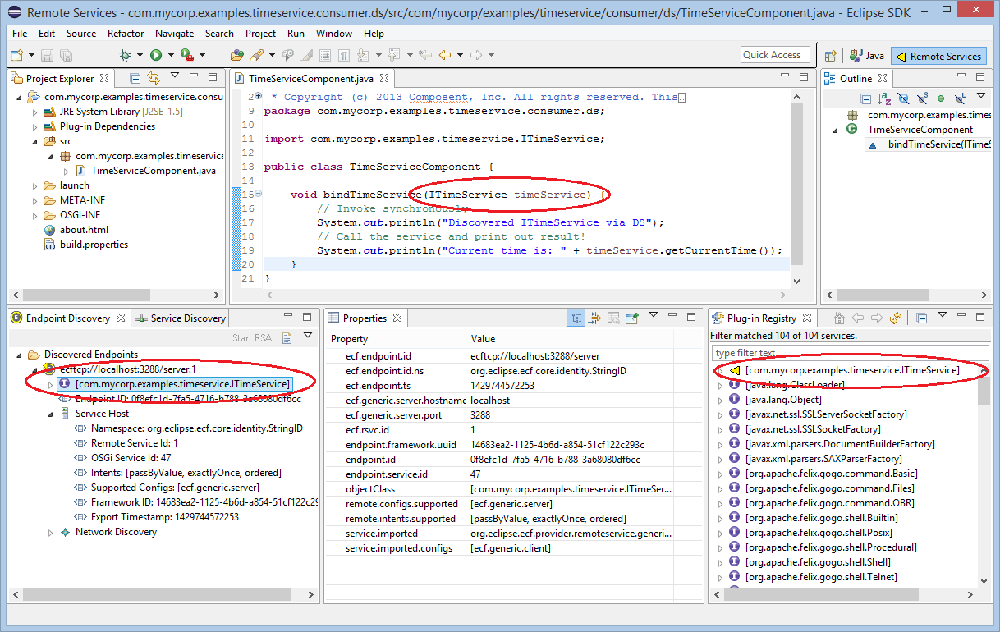

Eclipse Communication Framework (ECF)
Eclipse Communication Framework (ECF)
an eclipse runtime project
New and Noteworthy
3.11.0 Release
Return to ECF download page
New and Noteworthy for 3.10.1
New and Noteworthy for 3.10.0/Mars

|
Eclipse Communication Framework (ECF)
an eclipse runtime project New and Noteworthy 3.11.0 Release Return to ECF download page New and Noteworthy for 3.10.1 New and Noteworthy for 3.10.0/Mars |
|
|
Remote Services Provider API |
ECF's Remote Services implementation allows the use of alternative distribution providers. Distribution providers are responsible for the actual remote method call...i.e. the marshalling of parameters, the actual network transport, the unmarshalling of parameters and execution of the remote service method, the marshalling of the return value and the transport of the return value back to the caller. To make it easier to create distribution providers, we've added a new IRemoteServiceDistributionProvider interface allowing a distribution provider to be registered via the OSGi whiteboard pattern. Here is the org.eclipse.ecf.remoteservice.provider package. For example, here is a distribution provider that implements using the Jersey Jax-RS implementation as the implementation of a distribution provider. A single instance of this class is registered via Declarative Services and any remote services using the 'ecf.jaxrs.jersey.server' config type will use Jersey as the distribution mechanism. See the examples in the JaxRSProviders repo for full examples of defining a remote service using this provider. |
|
New Distribution Providers |
Using the remote services distribution provider API above, several new distribution providers have been create: |
|
Remote Services Tooling |
A theme for ECF in the Mars SR Cycle has been the creation of new Tooling to support development, debugging, and deployment of ECF Remote Services. This ongoing community effort includes in this release a new Remote Service perspective.  Once the Remote Service perspective is opened, it shows the new Endpoint Discovery view (lower left). The Endpoint Discovery view will be dynamically updated to display Endpoints that have been discovered via network discovery (i.e. using ECF-supported network protocols like zeroconf, slp, zookeeper, dnssd, etcd, or custom). To the right of the Endpoint Discovery View is the Eclipse-standard Properties view to display the properties present in the selected Endpoint. To the right of the Properties view is the Eclipse-PDE-provided Plug-in Registry, which can be used to show Remote Services that have been imported. Note that the Plugin-Registry defaults to grouping the presentation based upon Plugins rather than Services, and so should be set to Group By/Services view the view menu to display the OSGi Services currently active in Eclipse.  Discovered Endpoints can be Imported into Eclipse by opening the Endpoint's context menu. Importing the Endpoint means that ECF creates and locally registers a proxy for the remote service, allowing application code to actually use the remote service (call it's methods). As shown below, the Plugin Registry and the Endpoint Discovery view are graphically updated to show that the Remote Service is currently active in the Eclipse Framework, and that the Endpoint has been imported.
 |
|
New Etcd-based Discovery Provider |
A new discovery provider based upon Etcd service protocol is available via ECF's Etcd github repository |
|
Websockets Support |
Websockets support added via a ECF's Websockets github repository |
|
OSGi Remote Management |
OSGi Remote Services may be used to remotely manage OSGi servers (Karaf, etc). New bundles have been created to manage many aspects of an OSGi-based server. Remote Service APIs and implementations for the OSGi framework (bundles, services, wiring, others), ECF, Declarative Services/SCR, P2, ECF, RSA, Equinox Extension Registry and others have been created and ECF's OSGi Remote Management github repository |
|
Support for OSGi R6 Remote Service and Remote Service Admin (1.1) Specifications |
ECF provides a compliant and CT-test implementation of OSGi Remote Services and Remote Services Admin. In OSGi R6 specification work done in early 2014, the Enterprise Experts Group (EEG) made additions and some small changes to the Remote Service Admin specification (v1.1). Remote Services is specified in Chapter 100 of the enterprise specification, and Remote Service Admin in Chapter 122 of the specification. You can download the R6 enterprise specification at the OSGi web site.
With this 3.9.0 release, ECF's implementation is fully compliant with the OSGi R6 Remote Service and Remote Service Admin (1.1) specifications. This includes testing against the OSGi R6 Compatibilty Test suite for remote services/remote service admin parts of the specification. |